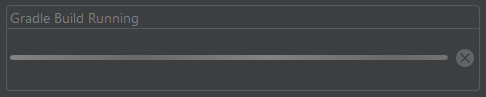
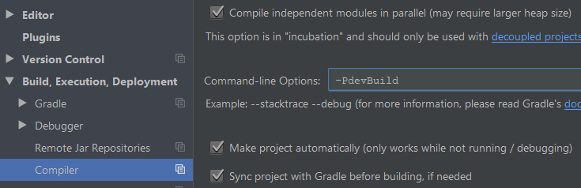
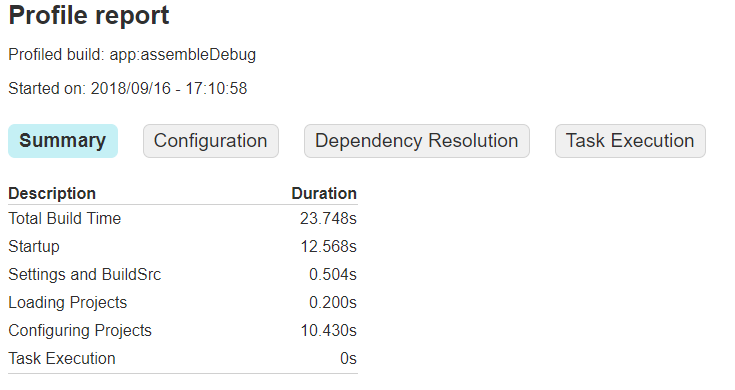
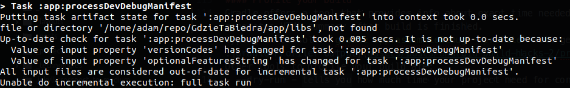

This is second part in series of articles about Android build configuration, all parts will be linked right below.
Motivation
Main reason I’ve been interested in build config tricks was to speed up development builds. As developer I’m building apps many times each day, often just to change one small thing and check if it works. Each second took of build time means a lot if you build often. And if you work at large project with lots of images and libraries you may die of old age before build is finished.
But there are ways to avoid sad death in front of computer displaying: 
Optimization
A lot of things I will mention comes from this Google I/O ‘17 talk, you might want to watch it.
Limiting your build
Your app may be available in 100 languages and have images in all possible densities - and it’s cool, users like that, but you don’t really need ALL of it when you are developing new features or fixing bugs. You can live with 1 language and 1 density. I’ve mentioned previously about this feature, but it’s worth repeating - limiting image density makes build faster.
resConfig() is available only for productFlavors, so using info from previous post you can add something like dev and prod flavors and filter only reasonable use cases.
I remember having build crashes when using density split and resConfig with density, but I cannot reproduce it on current version of Gradle Plugin (3.3.0-alpha10) so just keep in mind that it might cause some issues.
At Google I/O talk they mention also usage of minSdkVersion 21 in your development flavor config - it overrides default app minSdkVersion to allow usage of current multidex version that is much faster than legacy one. But this is now depricated - Gradle Plugin checks target device API for debug builds and sets minSdkVersion for it.
Compiler options
Builds can also be faster after some changes in Android Studio compiler settings. 
First checkbox on top allows you to compile app modules in the same time - as long as they don’t depend on each other. Yes it is an “incubating” feature but it works most of the time, and yes if your app is in single module it won’t make anything faster. I strongly encourage using multiple modules anytime it makes sense - it makes app architecture clean and organized, and speeds up build process.
The most interesting setting here is Command-line Options where we can add arguments to build executed when you press green play button - so I guess each time you want to run app on device during development. I’ve put there -PdevBuild which means my build will have a property devBuild. This can be validated in build.gradle and some build changes may be included just for debug builds from Android Studio. Of course you can build exactly the same version of app from command line on CI server, but it’s mostly useful for development builds.
So how to use it in builds?
If we are building from Android Studio, splits can be disabled since we are running code only on our device and size of APK doesn’t matter too much. Disabling splits makes builds faster - no need to divide resources into separate APK files. Also disabling crunching images makes build faster - again for development APK size doesn’t matter so saving few KB on images won’t compensate loosing few seconds of build if you are building app every few minutes.
Use instant run
I remember how excited I was when Instant Run was announced, and how I was then not using it because it wasn’t working well, at least for projects I was working on. But now it’s different (for most cases) and this is what we should be using during development. How it’s working? TL;DR: Instant Run doesn’t always compile whole app and send it to the device - it compiles changes and swaps only them on device so app can run instantly. There are few types of swaps, depending on what was changed from last build:
- hot swap - fastest - implementation change of already existing method, by default it restarts Activity, but it can be turned off
- warm swap - fast - change or removal of existing resource file, mandatory Activity restart
- cold swap - not-so-fast - mandatory App restart, it’s done for:
- adding, changing, or removing annotation, class field, static field, static method or method signature
- inheritance changes
- change of implemented interfaces
- element order in layouts that use dynamic ID
- no swap - sloooooooow - it compiles whole new APK and runs it on device when:
- changes are made in app manifest
- there are changes in resources linked in app manifest
- system UI elements are changed, like widgets or notifications
If your app versionCode is generated dynamically, for example from date, Instant Run will not speed up your build, because you are changing app manifest each time. But it can be easily fixed with our friend devBuild parameter:
For development builds we are using the same versionCode - 100, but for every other build versionCode is generated from date.
Other build boosters
- use
jcenter- it’s faster, safer and bigger thanmavenCentral preDexLibraries- it makes clean build a bit longer but every incremental build faster
- update your Java - Android Studio uses it’s own JDK by default, but if you are building also on CI server it’s good to keep Java updated
Disable unneeded tools
Proguard is a great tool - it removes unused classes and methods during build process and obfuscates code so it’s harder (but not impossible) to decompile apps. But during development we don’t really need that, turn it off.
Another great tool for your app is Fabric Crashlytics - it gathers all app crashes and it’s very useful for finding and fixing bugs. But during development you’ll rather use Logcat, no need for external tool. Also Crashlytics is generating build ID number for each build, it also slows build down because it’s kept in string resource file, so Instant Run wont be able to run hot swap.
After disabling crashlytics in build.gradle it is necessary to disable it in runtime:
Don’t use dynamic dependency versions
Have you ever seen something like this in code:
implementation 'com.android.support:appcompat-v7:+'
It’s cool right? you always will have newest version of library in your project! No need to update it manually each time. Unless you actually want to know what version are you using and not waste time looking for bug that wasn’t there just yesterday and you haven’t change anything in your code yet. Using dynamic dependency version is reckless. It also slows builds down, because Gradle needs to check if new version of dependency is available, it does it once every 24h.
Also forget about using compile for dependencies. Using implementation will make your builds faster and here is talk that explains why Jerome Dochez at Google I/O ‘17.
Gradle properties
Following settings can seriously boost your builds:
org.gradle.jvmargsvalue is something you should experiment with, general rule is that more is better but after certain value it doesn’t make a change so save some memory for watching cat videos on Youtube until build process is done. Documentationorg.gradle.parallelallows Gradle to run the same tasks in different projects in parallel, so it’s kinda the same feature thatCompile Settingsgave us, just for Gradle tasks and not compilation itself Documentationorg.gradle.cachingnow that’s a big one - a lot of tasks that Gradle runs during build will return the same output if input has not changed, so instead of running them Gradle can just read output from it’s cache. Documentationorg.gradle.configureondemandwill allow Gradle to configure only projects (modules in app) that need that, not every module each time, build configuration can also take some time. Documentation
Profile your build
Gradle offers a tool that provides info about exact time needed to finish each build step. It’s called profiler and generates HTML summary after build is finished.
Typing in console: gradle app:assembleDebug --profile will generate similar report to this:

Other tools to profile your build are:
- –dry-run - tells you how much time your project need for configuration, should be few seconds max
- –info - will print in console why certain tasks are executed 
- –scan - will send build result to Gradle Scans website where you may find some additional info about your build process
Gradle scripts
Writing your own Gradle tasks is awesome, especially when you want to automate things with CI. But custom tasks can slow your build even when you think they are not executed. When you have simple task like:
The output will be always printed (because task gets executed) when you run ANY other task in project. This one was simple printing, but can you image generating some config files, HTTP requests, calculating versionCode etc? And all tasks needs to finish before your build is done.
Solution is dead simple:
Just move actual task work into doLast and leave configuration stuff like group outside.
Outro
Knowing above things made my builds more efficient. You may not feel it right now, but projects tend to grow over time, and keeping build times at low value makes world a happier place. Be so kind and share this post with every Android developer you know - you might save them few seconds every day :)